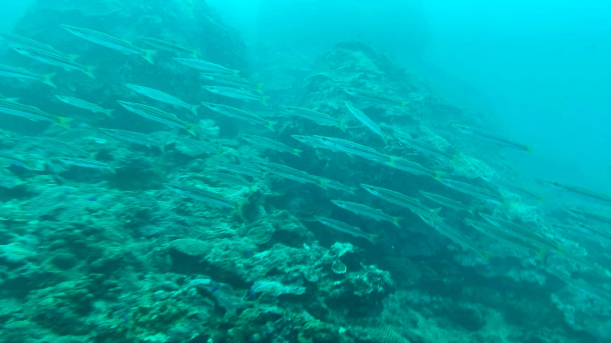

關於我
技能
個人經歷
興趣
我們可以欺騙任何人
卻無法欺騙自己
姓名:曾仲祺
居住地:新北市
個性:老實、熱情、冷靜
血型:B
生日:4月5日
興趣:閱讀、看棒球、潛水
程式能力
Python
Java
Html
CSS
其他能力
溝通能力
70%
邏輯思考
90%
喇低賽
90%
吉他
25%
個人經歷
大一上管理學
不只撿,更要減,讓我們一起守護這片海洋
在大一上的管理學這門課，我們透過全國認養淨灘協會
參與了一個觀音海水浴場的淨灘活動。藉由該次活動，
我學習到了自己尋找活動並與對方接洽的方法。此外，
在淨灘的過程中，我們也發現到了海洋受到人類的汙染
有多深，這是不親自淨灘過一次無法了解的。而最讓我
印象深刻的是，即使那天下著雨，仍有這麼多人到場，
願意為了海洋盡一份心力，使我深受感動。
中原大學
軟式棒球社
受到家父影響，我從小就很喜歡棒球，無奈由於場地限
制，在大學前始終沒有可以真正打到棒球的機會，頂多
就是偶爾傳傳接球或去去棒球打擊場的程度，始終只能
在電視上看看比賽解解饞。幸運的是，中原大學有軟式
棒球社，而且班上也有其他同學加入，總算在求學期間
打到了夢寐以求的棒球，而社團的學長們人也都很好，
雖然身為一個初學者，守備功夫還不夠扎實，不過還是
打球打得很開心。
大二上網路程式設計
二手衣物拍賣網
在大二上的網路程式設計課程，我們與甲班合作設計出
了一個二手衣物拍賣網，甲班負責前端，我們負責後端
。在該專案中，我學習到了如何與不熟悉的人合作溝通
並共同完成一項專案，雖然最後由於時間與能力的不足
，成品缺少了一些功能，不過仍使我受益良多，是一次
寶貴的經驗。
興趣
閱讀
看棒球

潛水